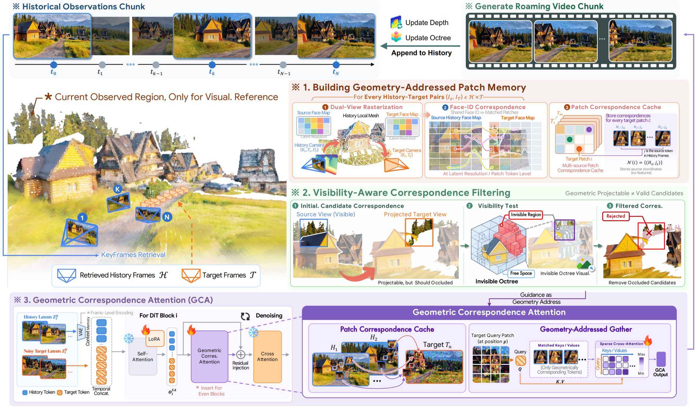

Geometry as Address: Routing Attention to Visual Memory for Long-Horizon Camera-Controlled Video Generation
ARXIV 2026
1State Key Laboratory of CAD&CG, Zhejiang University 2HKUST(GZ) 3LIGHTSPEED
Gallery
Given a single image and a text prompt, GEAR generates minute-long, photorealistic videos along arbitrary user-specified camera trajectories, while preserving spatial consistency and faithfully recovering previously observed content upon revisitation.
Motivation
- History-based implicit methods retain historical latents as memory and retrieve relevant observations via attention, but the growing context makes dense historical attention increasingly expensive and susceptible to irrelevant tokens.
- Reconstruction-based explicit methods fuse historical observations into a global 3D representation for target-view reprojection, but accumulated geometry errors and cross-view inconsistencies can introduce persistent artifacts such as duplicated surfaces, floaters, and geometric drift that contaminate subsequent generations.
- These limitations motivate using geometry as a visual-memory address rather than the memory itself, leveraging local historical-to-target correspondences without relying on globally consistent reconstruction.
- Based on this insight, we propose GEAR, a Geometry-Enabled Attention Routing framework that establishes per-frame source-target correspondences from estimated depth and uses Geometric Correspondence Attention to sparsely route each target token to geometrically matched historical memory during denoising.
Method
We propose GEAR, a Geometry-Enabled Attention Routing framework for camera-controlled long-horizon interactive video generation. Instead of globally fusing estimated geometry, GEAR uses the depth of each historical frame independently to establish source-target correspondences under future viewpoints, and stores the patch-level relationships in a lightweight cache. Our Geometric Correspondence Attention (GCA) then exposes each noisy target token only to its geometrically matched historical memory tokens as keys and values, and injects the aggregated features through a residual branch during denoising. Geometry thus explicitly determines where each target token can retrieve visual evidence, introducing a sparse, explicitly geometry-addressed pathway for long-term memory access.
Rather than requiring the video model to search the entire history or the geometry estimator to reconstruct the entire world, GEAR uses geometry to identify which pieces of history are relevant to each piece of the future.
We additionally introduce an Invisible Octree that incrementally accumulates visibility evidence along the generation trajectory and filters geometrically plausible but occluded correspondences.

System overview. For each target chunk, GEAR constructs patch correspondences to retrieved history using per-frame geometry and filters occluded matches with the Invisible Octree. GCA then injects matched historical features into noisy target tokens during denoising, after which generated observations are appended to the history bank for continued rollout.
We illustrate how the local geometry of each history condition is used to establish a history-to-target patch correspondence cache at the latent resolution. Our Geometric Correspondence Attention then restricts each noisy target token to attend only to its geometrically matched historical memory tokens as keys and values, and injects the aggregated features through a residual branch during denoising, as illustrated in the pipeline figure.
Qualitative Comparisons for Minute-Long Generation under Challenging Camera Trajectories
We present one-minute videos generated by different methods under a challenging camera trajectory involving rapid motion and continuous rotation. The Reference visualizes the geometry corresponding to the first frame projected along the target camera trajectory, serving as a reference for camera motion. Our GEAR maintains high visual fidelity and scene consistency throughout the extended trajectory, whereas competing methods suffer from progressive drift and visual degradation.
Qualitative Comparisons for DL3DV-Evaluation
We present inference results on DL3DV-Evaluation. Given the first-frame image and the corresponding camera trajectory as input, each method generates a video following the specified camera motion. We additionally compare the camera trajectories estimated from the generated videos using ViPE against the ground-truth trajectories. GEAR preserves visual quality, camera adherence, and scene consistency throughout long-horizon generation.
To reduce storage requirements, we downsample the generated videos by a factor of 2 in both spatial resolution.
Qualitative Comparisons for World-Score
We generate a set of closed-loop camera trajectories to evaluate the long-horizon revisitation ability of each model. Since each trajectory returns to previously observed viewpoints, a model with consistent memory should reproduce the same scene content when the camera revisits it.
To reduce storage requirements, we downsample the generated videos by a factor of 2 in spatial resolution.
BibTeX
@article{yang2026geometry,
title={Geometry as Address: Routing Attention to Visual Memory for Long-Horizon Camera-Controlled Video Generation},
author={Yang, Zesong and Chen, Weikai and Cui, Liyuan and Jiang, Lutao and Zhang, Runze and Yin, Yingda and Huang, Xiaoyang and Yan, Kai and Luo, Keyang and Zheng, Wangguandong and Wang, Xin and Bao, Hujun and Cui, Zhaopeng},
journal={arXiv preprint arXiv:2609.34722},
year={2026}
}